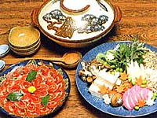
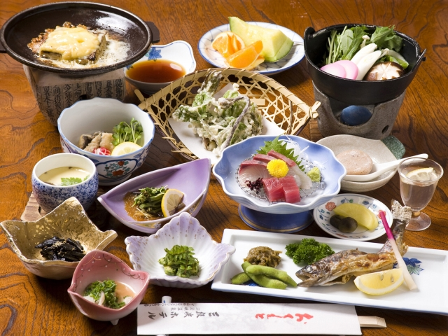
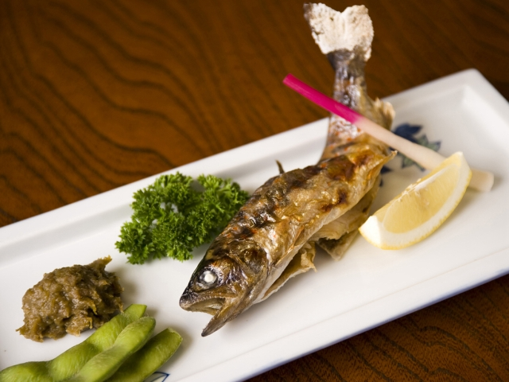
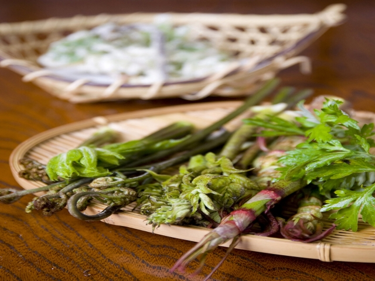
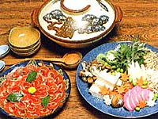

|  |  |
 |
|
| 当館自慢の料理 | |
| 天の恵みの素材を主人自ら山に入り山菜を摘んでおります この季節、この機会ならではのものを皆様にお出しています。 わらび、うど、ぜんまい、ふき、ふきのとう、たらのめ、つくし |
|
|  |  |
|  | |
| ■ 料理のご紹介 |
| 料理内容 | 会席料理 | ||
| 地の素材 | 山菜（わらび、うど、ぜんまい、ふき、ふきのとう、たらのめ、つくし、わさび他)、椎茸、皮茸（コウダケ）、松茸他 季節により変化します | ||
| 川魚（鮎、、山女、鰻、他）、海の幸(カンパチ、えび、蛸他) | |||
| 牛、猪、等 | |||
| 献立の変更 | 年４回 | ||
| 標準料理 | ■ 春〜夏 | 旬の山菜と川魚をメインとしたお料理 | |
| ■ 秋〜冬 | 山菜と川魚をメインに鍋料理を加えたお料理 | ||
| 夕食場所 | 原則広間でのご夕食となります | ||
| 朝食場所 | 原則広間でのご朝食となります（コーヒーサービス付き） | ||
| お飲み物 | 日本酒、冷酒、焼酎、ウィスキー、ジュース、コーラなど | ||
| ■ 特別追加料理（要予約） |
| 猪鍋 | 当館独自の味噌と当地で捕れる猪肉 ご提供期間 ： 秋〜春 |
| 干し鮎 七輪焼き |
当地の干した地鮎を七輪の炭で焼いたもの ご提供期間 ： 秋〜春 |
| 鮎の刺身 | 天然の鮎の刺身 ご提供期間 ： 夏 |
|  | |
|
|